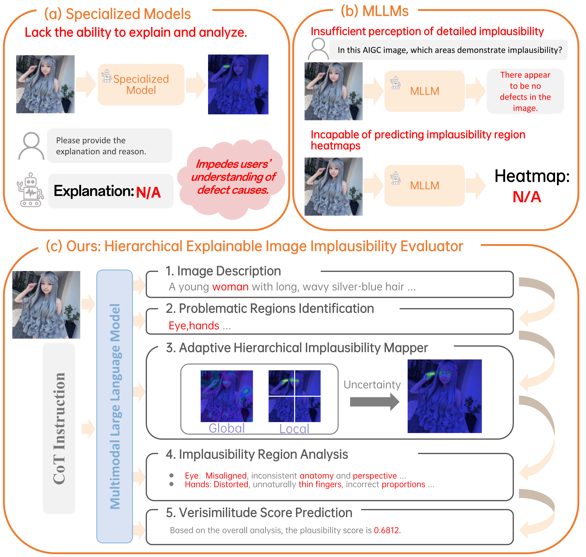
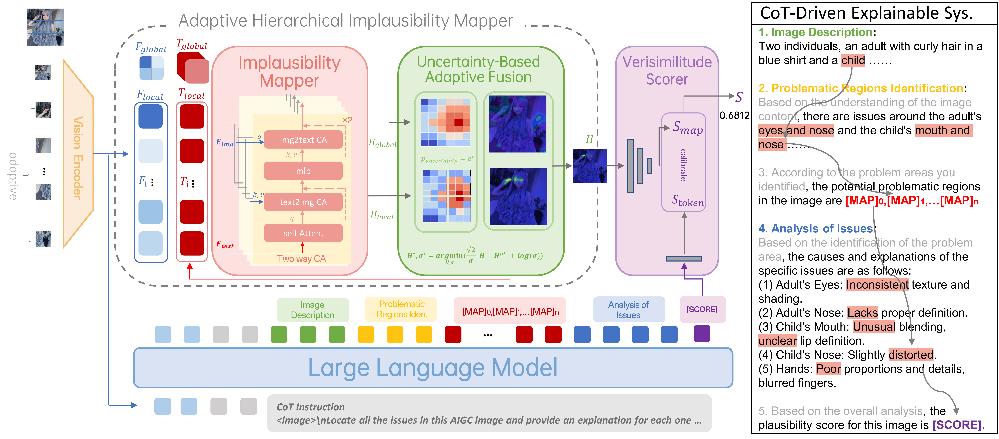

(a) Specialized models lack the ability to explain and analyze subtle implausibility regions, hindering understanding for general users. (b) MLLMs struggle with precise localization of local defects and cannot directly output pixel-level implausibility areas. (c) Our CoT-Driven Explainable Trinity Evaluator can generate heatmaps, analyses, and scores. In our Adaptive Hierarchical Implausibility Mapper, local and global heatmaps are predicted separately, improving the localization of tiny implausibilities

The Implausibility Mapper processes a dynamic number of special [MAP] tokens and the image features to enhance detailed implausibility localization. We implement the Adaptive Hierarchical Implausibility Mapper through the local and global heatmaps and the uncertainty-based adaptive fusion. In the verisimilitude scorer, features from the heatmap and the special [SCORE] token are integrated for score prediction. Furthermore, our Cot-Driven Explainable System guides the LLM to decompose complex issues into progressive subproblems, facilitating the mutual enhancement of heatmap, analysis, and score prediction, thus improving explainability.

Three stages in Expl-AIGI-Eval dataset construction: Stage 1 - Visual Prompting: Defect regions are circled on images to aid Claude-3.5-sonnet in accurately locating problem areas. Stage 2 - LLM Free-Form Output: Claude-3.5-sonnet generates free-form defect location and analysis. Stage 3 - In-Context Learning-Based Formatting: GPT-4o is used for format standardization.

Model outputs of HEIE. HEIE not only predicts implausibility heatmaps but also provides image descriptions, problematic regions identification, analysis of issues, and score, achieving reliable and explainable implausibility evaluation. Note that for the last AIGC image, which has no evident defects, our model avoids false positives.

Comparison with Baselines. Each set of images, from left to right, includes: (a) Input Image, (b) Output of InternViT-300M-448px, (c) Output of CLIP-ViT-Base-Patch16, (d) Output of ours HEIE, (e) Ground Truth.

Results of Hierarchical Implausibility Mapper. Columns (c) and (d) are the global and local heatmaps from our Hierarchical Implausibility Mapper. Column (e) illustrates the final heatmap after adaptively fusing the global and local heatmaps.
BibTeX
@article{yang2024heie,
title={HEIE: MLLM-Based Hierarchical Explainable AIGC Image Implausibility Evaluator},
author={Yang, Fan and Zhen, Ru and Wang, Jianing and Zhang, Yanhao and Chen, Haoxiang and Lu, Haonan and Zhao, Sicheng and Ding, Guiguang},
journal={arXiv preprint arXiv:2411.17261},
year={2024}
}